International Journal of Mechanical Engineering and Mechatronics (IJMEM)
ISSN: 1929-2724

Volume 1, Issue 2 Year 2012 - Pages 50-60
DOI: 10.11159/ijmem.2012.006
LMI-based Adaptive Observers for Nonlinear Systems
Jiang Zhu, Karim Khayati
Royal Military College of Canada, Department of Mechanical & Aerospace Engineering Po Box 17000, Station Forces,
Kingston, Ontario, Canada K7K 7B4
jiang.zhu@rmc.ca; karim.khayati@rmc.ca
Abstract - This paper deals with the design of adaptive observers that can estimate both the states and the parameters of a large class of nominal and perturbed nonlinear systems with a regression matrix (i.e. matching matrix with the unknown parameter vector) depending on unknown states. The asymptotic stability of the state and parameter estimate errors is developed in the presence of common persistency of excitation (PE). The observer gain calculus is cast as a linear matrix inequality (LMI) feasibility problem. The appeal of this proven theoretical design is further demonstrated numerically.
Keywords: Nonlinear System, Perturbed Dynamics, Adaptive Observer, Parameter Estimation, LMI.
© Copyright 2015 Authors This is an Open Access article published under the Creative Commons Attribution License terms. Unrestricted use, distribution, and reproduction in any medium are permitted, provided the original work is properly cited.
1. Introduction
The adaptive observer design for linear and nonlinear systems has been widely investigated during the last few decades (Khayati & Zhu, 2011; Zhu & Khayati, 2011; Maatoug et al., 2008; Cho & Rajamani, 1997; Marino & Tomei, 1995) and references cited therein. In (Cho and Rajamani, 1997), the authors have designed a systematic approach for an adaptive observer that estimates the full-state variables for nonlinear dynamics in the presence of uncertain parameters possibly depending on the input and state variables. The stability of the algorithm is guaranteed when at least some of the measured outputs are such that the transfer matrix from the unknown parameters to these outputs is dissipative (Cho & Rajamani, 1997). The design of the observer depends on the ability to solve an LMI problem under a conservative matrix equality refering to "matchning conditions" of the dynamic representation. Even, it has been reported and applied in many other works in the literature (Dimassi et al., 2010; Liu, 2009; Dong & Mei, 2007; Stepanyan & Hovakimyan, 2007; Zhu, 2007), this concept is still hard to achieve within some (but very common) dynamics as discussed in (Zhu and Khayati, 2011).
The design of adaptive observer schemes to estimate jointly the states and the parameters for nonlinear dynamic systems with uncertainties referring more to actual scenarios has been studied (Dimassi et al., 2010; Liu, 2009; Marino et al., 2001). However, there are still problems (other than the matching conditions) in these given adaptive observers, and also, the assumptions are difficult to achieve (Dimassi et al., 2010) (Dimassi et al., 2010; Liu, 2009). In most of these recent works, authors have considered the case of known nonlinear regression matrix of measurable states and inputs (Zhao et al., 2011; Paesa et al., 2010; Zemouche & Boutayeba, 2009; Garimella & Yao, 2003; Marino et al., 2001). In (Zemouche & Boutayeba, 2009), a unified H∞ adaptive observer for a class of nonlinear systems is introduced to estimate uncertain parameters in the unmeasured nonlinearities. These nonlinearities are limited to monotonic functions. In (Stamnes et al., 2009), the authors have designed a nonlinear adaptive observer for a limited class of nonlinear systems. The proposed adaptation law has been built using nonlinear partial differential equations in known and unknown states. However, the stability of such an observer requires nonlinear time-varying "sector conditions" to be satisfied.
In this paper, a more general form of the adaptive observer scheme discussed in (Zhu and Khayati, 2011) will be extended to nonlinear dynamics with a regression matrix function of both measurable and unmeasurable signals and unknown disturbances. The stability condition of the proposed adaptive observer will be presented using only strict LMIs (Boyd et al., 1994). The proposed design estimating the full states and identifying the unknown parameters for a large class of nonlinear dynamic systems is cast with general conditions that are still feasible and address realistic plants. This paper is organized as follows. In Section 2, we describe the problem statement and assumptions. In Section 3, we introduce the general form of the nonlinear adaptive observer (NLAO) for the nominal dynamics (with no disturbances), and then, the robust nonlinear adaptive observer (RNAO) for perturbed nonlinear dynamics respectively. Section 4 shows illustrative simulation examples, while Section 5 concludes this work.
2. Statement and Assumptions
Problem Statement
Consider the nonlinear dynamics with unknown disturbances:
|
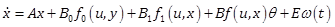 |
(1) |
|
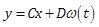 |
(2) |
where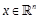is the state vector, 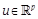the input vector, 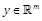the output, 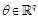the vector of unknown constant parameters and 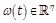 represents unknown disturbances. , 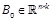, 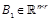, , , and are known constant matrices. 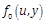, 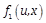and 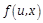are nonlinear functions in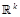, 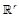and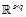, respectively.
Assumptions
For the forthcoming design, we consider the following assumptions (Zhu and Khayati, 2011):
A1.The vector of unknown constant parameters 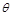 is bounded, with
|
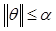 |
(3) |
A2. is continuously bounded, and both functions 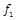 and 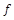 are Lipschitz in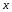, with
|
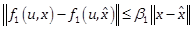 |
(4) |
|
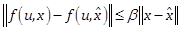 |
(5) |
A3.The input vector 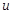 is of class 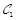(i.e. continuous function having continuous first derivatives).
3. Adaptive Observer Design
For the adaptive observer design, we first briefly introduce the design for the case of nominal dynamics i.e. disturbance free one; then we extend it to the perturbed case and prove the effectiveness.
3.1. Case 1 – Nominal Dynamics
Given the unperturbed nonlinear model, that is described by (1) and (2) with 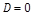 and 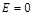. Consider the following full-order nonlinear observer
|
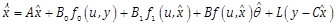 |
(6) |
and adaptation law
|
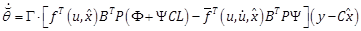 |
(7) |
|
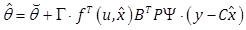 |
(8) |
where 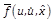 is the total time derivative of 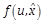 given by 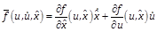, 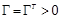 matrix of , , 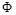 and 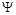 matrices of .
Proposition 1 – Under assumptions A1-A3, if there exist matrices 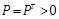 in and such that
|
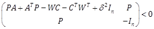 |
(9) |
with 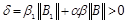 and matrices and of computed from
|
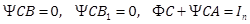 |
(10) |
with 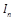 the identity matrix of , then the state estimation error vector 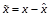 of the NLAO (6)-(8), with the observer gain matrix computed as 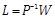, for the nominal system (1) and (2) tends to zero and the parameter estimate error vector 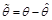 is radially bounded. In addition, if for some positive scalars 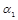, 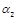 and 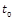with the inequalities
|
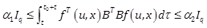 |
(11) |
hold 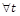, where 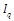 is the identity matrix of order 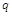, then both estimate errors and asymptotically as . The condition (11) refers to the PE which is very common in the literature (Maatoug et al., 2008; Dong & Mei, 2007; Cho & Rajamani, 1997).
Proof – Let and be the state and parameter estimate errors, respectively. From (1), (2) and (6), we derive
|
(12) |
|
(13) |
By using the conditions (10), (13) reduces to
|
(14) |
Now, to investigate the stability, given and , consider the Lyapunov candidate function (Khayati and Zhu, 2011). Using (12) and (14), we have
|
(15) |
|
(16) |
Using , we notice the inequality , we obtain
|
(17) |
is negative if
|
(18) |
The inequality (18), which is nonlinear in and (nonlinearities refer to and ), will be transformed into the LMI (9) by simply applying the Schur complement theorem (Boyd et al. 1994) and the change of variable .
Now, from (17) and (18), such that
|
(19) |
This implies (i.e. time-functions of finite ¥-norm), and then and . Integrating (19) leads to
|
(20) |
Since is finite, we obtain (i.e. finite 2-norm vector-function). From (12), we have . Therefore, by applying theorem 8.4 of (Khalil, 2002) based on Barbalat's Lemma, and . From (12), we have . Using the inequality (5) and noting that , we have . So, from and is constant (i.e. assumption A1), we obtain and then as (Dong and Mei 2007). Hence, as . In the following, we investigate the PE property to lead to . Define (Dong and Mei 2007). Using the integration by parts, we obtain
|
(21) |
As , we obtain
|
(22) |
Since , then for any finite , we have
|
|
(23) |
Moreover, since is bounded (see assumption A2) and , from (14), we have , and then as . Thus, from (22), we have , as . From the assumption of PE (11), i.e. for positive scalars and , we obtain , implying (Dong & Mei, 2007).
3.2. Case 2 – Perturbed Dynamics
Consider the perturbed dynamics (1) and (2) under assumptions A1-A3. We propose the following RNAO scheme
|
(24) |
|
(25) |
|
(26) |
|
(27) |
where is the total time derivative of ; , , , , , , , , and are constant matrices computed by the following
|
(28) |
|
(29) |
|
(30) |
|
(31) |
with being the identity matrix of , the observer gain and the adaptation matrix gain of .
Proposition 2 – Under assumptions A1-A3, if there exist matrices in and such that (32) holds, then and is radially bounded as .
|
(32) |
with . The observer gain matrix is . The algebraic equality conditions (28)-(31) complete the computation of the adaptive observer scheme. In addition, if the PE condition
|
(33) |
holds for some positive scalars , and , then the RNAO (24)-((27)) for the perturbed dynamics (1) and (2) is asymptotically stable, that is both state and parameter estimates converge asymptotically to their actual values as .
Proof – Using , the observer output is reduced to . Its time derivative is then obtained from (1), (2), (24), (25) and
|
(34) |
Let be the state estimate error. From (1), (2), (24), (25), we derive
|
(35) |
Using (29) and (30), we obtain
|
(36) |
From (26) and (27), using and the error dynamics (36), we derive
|
(37) |
By using the conditions (31), the dynamics (37) reduces to
|
(38) |
Let be the parameter estimate error. Based on assumption A1, we have the . Then, we obtain the adaptation error dynamics
|
(39) |
To investigate the stability of the estimate error dynamics and the proposed LMI feasibility problem, we consider the same Lyapunov function and the PE condition (33), and we follow the same steps of the proof of Proposition 1 shown above.
3.3 Comments
In the first algorithm, we discuss a nonlinear adaptive observer for disturbance-free dynamics with nonlinear regression matrix function of unknown states. The proposed design has the advantage of being applied appropriately for nonlinear dynamics (1)-(2) with the particular property of ; that is, columns of the matrix lie in the null space of the output matrix .
Then, we consider the more general case of perturbed nonlinear dynamics. The proposed observer in the second scheme decouples the effect of the disturbances from the estimation process. This scheme is expected to improve the accuracy and robustness of estimation when the system is subject to unknown disturbances and noisy measurement. Both schemes represent a generalization of the second order adaptive observer dynamics introduced in (Zhu & Khayati, 2011). The key element of the proposed design is inspired by (Zhao et al., 2011) where the authors have considered only a linear dynamics counterpart with a known regression term.
The matrices of the adaptive observers are computed using equations and LMIs, independently. These independent computations make the design of the NLAO and RNAO feasible provided the common assumptions and the LMI (9) (or (32)) are satisfied. This design is more tractable numerically than the method in (Cho & Rajamani, 1997) which needs more effort to solve a set of equalities and inequalities simultanously.
4. Illustrative examples
In this section, we show three illustrations enhancing the effectiveness of both schemes discussed above. The first example shows a low speed motion with a dynamic friction of unknown states and parameters. In the second example, we consider a disturbed second order mechanical dynamics with nonlinear terms, while the third one represents a third order dynamics including an uncertain nonlinear term.
4.1 Example 1 – Low speed motion with dynamic friction
Consider a single known mass at position
|
(40) |
under the influence of a dynamic friction and an input force . The friction force is given by the modified LuGre model:
|
(41) |
|
(42) |
where with represents the actual velocity. is the frictional stiffness. is the normalized Coulomb friction and the normalized static friction coefficient. The parameters , and are unknown. We assume the position and the velocity are both measurable, but is unknown and is under the stiffness, Stribeck, static and Coulomb effects in the absence of internal and external damping frictions (Canudas et al., 1995). The term represents a finite function which is chosen to describe the different friction effects. It replaces the function given in (Canudas et al., 1995):
|
(43) |
In the literature, it was widely proven that the friction parameterization is not limited to (43). Indeed, this term is nonlinear in the unknown parameter. By using (42), the proposed modified LuGre model presents an easy-to-use linear-in-the-parameters form that captures most of the observed static friction phenomena of velocity and the unknown parameters become linearly dependent and thus suitable for any on-line estimation. denotes the Stribeck time constant and indicates the velocity range in which the Stribeck effect is effective. The friction model is a nonlinear function of . To prevent further difficulties with the nonlinear estimation technique, an empirical value of is selected from the literatures (Waiboer et al., 2005; Canudas et al., 1995). The state representation , , and defines the system in the state space form (1) and (2) using the model matrices shown in Table 1. For simulation purposes, the parameters characterizing the mechanical system are chosen , , , and respectively. The unknown parameters are , , and , respectively. To estimate the unknown friction force and parameters, we apply the NLAO design with the computed parameters as shown in Table 1. The estimates of the states are shown in Figures 1-3. The estimates of the parameters are depicted in Figures 4-6. Both the state estimation error and the parameter error converge to zero quickly and accurately.
Table 1. Plant and NLAO parameters in example 1.
|
Plant |
, , , , , |
|
NALO |
, , , , |
4.2. Example 2 – Nonlinear mass-spring-damper (MSD) model
We consider the MSD model introduced in (Stamnes et al., 2009)
|
(44) |
where is the applied force, the position and the velocity, a load disturbance. The positive constants , and are unknown and denote the spring stiffness, the mass, and the nonlinear damping coefficient, respectively. We assume the position and the velocity measurements are both available but with some noise affecting the velocity signal. By assuming the fact that the load exhibit some noisy disturbance with similar frequency spectra, for simplicity we consider that both load and measurement noises have the same magnitude. Using the states and and the output vector components and , this dynamic model can be written in the state space representation (1) and (2) using the model matrices shown in Table 2. The components of the unknown vector are , and , respectively (Stamnes et al., 2009). The parameters characterizing the simulated MSD dynamics are chosen , and , respectively. To estimate the unknown states and parameters of the dynamics, we consider first the nominal case by assuming a disturbance free dynamics and we apply the NLAO scheme. Then, we consider the perturbed dynamics for which we apply both the NLAO and RNAO and compare their effectiveness and performances. The observer and adaptation law parameters of the NLAO (6)-(8) and the RNAO (24)-(27) are obtained in Table 2. Consider the input signal which results in sufficiently rich input signal that guarantees the fulfillment of the PE condition and that is necessary to ensure the convergence of the unknown parameters to their true values). The simulation results are shown in Figures 7-11. Both the state estimation error and the parameter error converge to zero quickly and accurately.
Table 2. Plant, NLAO and RNAO parameters in example 2.
|
Plant |
, , |
|
NALO |
, , , , |
|
RNAO |
, , , , , , , , , |
4.3. Example 3 – Nonlinear third order dynamics
Consider the dynamics below
|
(45) |
|
(46) |
|
(47) |
|
(48) |
and are the measurable states. The vector of the unknown parameters is . For simulation, we choose , and . First, considering the nominal dynamics, the parameter is assumed to be a well-posed constant . Thereafter, we simulate with some dynamic perturbation by assuming uncertain. For simulation, we consider . The observer and adaptation law matrices of the NLAO and RNAO are shown in Table 3.
Table 3. Plant, NLAO and RNAO parameters in example 3.
|
NALO |
, , , , |
|
RNAO |
, , , , , , , , , , , , , |
Using a linear combination of sine waves as an input signal, all results of the estimates of the states and parameters obtained with the two proposed methods (NLAO and RNAO) are shown in Figures 12-17. Both the state estimation error and the parameter error converge to zero quickly and accurately.
5. Conclusion
A new nonlinear adaptive observer and a corresponding robust scheme are derived for a wide class of nonlinear dynamic systems with unknown parameters, uncertain dynamics and disturbances. The asymptotic stability is developed using LMI frameworks. The proposed estimation design exhibits a satisfactory convergence of both the states and the parameters to the actual values. Examples with simulation results successfully demonstrate the effectiveness of the proposed schemes. It is shown that both RNAO and NLAO track the trajectory but with a difference. In fact, the NLAO design has better performance with the nominal case than the perturbed one. We depict the difference that the state estimations under the RNAO approach the actual state coincidently while the NLAO does not. Moreover, the parameter estimation errors under the RNAO converge to zero despite the presence of uncertain dynamics, but the errors under the NLAO converge to zero only when the system is nominal.
References
Boyd, S., El Ghaoui, L., Feron, E., Balakrishnan, V., (1994) Linear Matrix Inequalities in Systems and Control Theory. SIAM Studies in Applied Mathematics. View Article
Canudas, C., Olson, H., Astrom, K., Lischinsky, P., (1995). A New Model for Control of Systems with Friction. IEEE Transactionon Automatic Control, Volume 40(3), pp. 419-425. View Article
Cho, Y., Rajamani, R., (1997). A Systematic Approach to Adaptive Observer Synthesis for Nonlinear Systems. IEEE Transaction on automatic Control, Volume 42(4), pp. 534-537. View Article
Dimassi, H., Loria, A., Belghith, S., (2010). A Robust Adaptive Observer for Nonlinear Systems with Unknown Inputs and Disturbances. 49th IEEE Conference on Decision and Control, pp. 2602-2607, Atlanta, GA. View Article
Dong, Y.-L., Mei, S.-W., (2007). Adaptive Observer for a Class of Nonlinear Systems. Acta Automatica Sinica, Volume 33(10), pp. 1081-1084. View Article
Garimella, P., Yao, B., (2003). Nonlinear Adaptive robust observer design for a class of nonlinear systems. Denver, Colorado, USA, pp. 4391-4396. View Article
Khalil, H., (2002). Nonlinear Systems. 3rd Edition, Prentice-Hall, New York. View Article
Khayati, K., Zhu, J., (2011). Nonlinear Adaptive Observer Design for an Electromechanical Rotative Plant. 24th Canadian Conference Electrical and Computer Engineering, Niagara Falls, pp. 385-388. View Article
Liu, Y., (2009). Robust Adaptive Observer for Nonlinear Systems with Unmodeled Dynamics. Automatica, Volume 45, pp. 1891-1895. View Article
Maatoug, T., Farza, M., M'Saad, M., Koubaa, Y., Kamoun, M., (2008). Adaptive Observer Design for a Class of Nonlinear Systems with Coupled Structures. International Journal of Sciences and Techniques of Automatic Control,Computer Engineering, Volume 2(1), pp. 484-499. View Article
Marino, R., Santosuosso, G., Tomei, P., (2001). Robust Adaptive Oservers for Nonlinear Systems with Bounded Disturbances. IEEE Transactionns on Automatic Control, Volume 46(6), pp. 967-972. View Article
Marino, R., Tomei, P., (1995). Adaptive Observers with Arbitrary Exponential Rate of Convergence for Nonlinear Systems. IEEE Transactions on Automatic Control, Volume 40(7), pp. 1300-1304. View Article
Paesa, D., Llorente, S., Lopez-Nicolas, G., Sagues, C., (2010). On robust PI adaptive observers for nonlinear uncertain systems with bounded disturbances. Marrakech, Morocco, pp. 1031-1036. View Article
Stamnes, O., Zhu, J., Aamo, O., Kaasa, G., (2009). Adaptive Observer Design for Nonlinear Systems with Parametric Uncertainties in Unmeasured State Dynamics. Shanghai, China, pp. 4414-4419. View Article
Stepanyan, V., Hovakimyan, N., (2007). Robust Adaptive Observer Designfor Uncertain Systems with Bounded Disturbances. IEEE Transactions on Neural Networks, 18(5), pp. 1392-1403. View Article
Waiboer, R., Aarts, R., Jonker, B., (2005). Velocity Dependence of Joint Friction in Robotic Manipulators with Gear Transmissions. Multibody Dynamics, ECCOMAS Thematic Conference, Madrid, Spain. View Article
Zemouche, A., Boutayeba, M., (2009). A Unified H∞ Adaptive Observer Synthesis Method for a Class of Systems with both Lipschitz and Monotone Nonlinearities. Systems,Control Letters, Volume 58(4), pp. 282-288. View Article
Zhao, Z., Xie, W.-F., Hong, H., Zhang, Y., (2011). A Disturbance Decoupled Adaptive Observer and its Application to Faulty Parameters Estimation of a Hydraulically Driven Elevator. International Journal of Adaptive Control and Signal Processing, Volume 25, pp. 519-534. View Article
Zhu, F., (2007). The Design of Full-Order and Reduced-Oder Adaptive Observers for Nonlinear Systems. IEEE International Conference on Control and Automation, Guangzhou, China, pp. 529-534. View Article
Zhu, J., Khayati, K., (2011). Adaptive Observer for a Class of Second Order Nonlinear Systems. International Conference on Communications, Computing and Control Applications, Hammamet, Tunisia, pp. 1-6. View Article